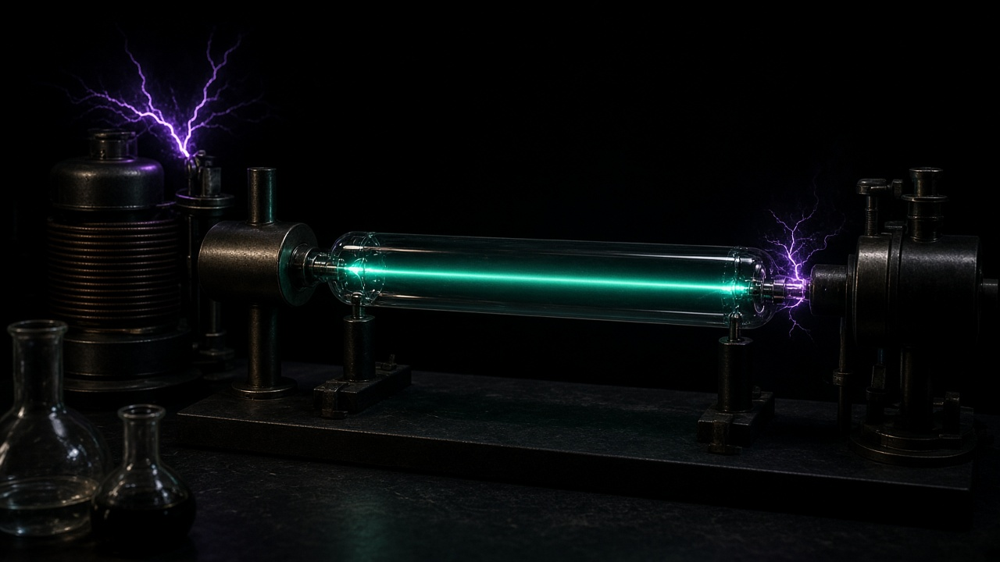

تركيب أنبوبة التفريغ
- أنبوب زجاجي يُفرَّغ جزئياً من الهواء (ضغط منخفض).
- قطبان: مهبط سالب، ومصعد موجب.
- جهد كهربائي مرتفع بين القطبين.
- يظهر توهج، ثم أشعة تنطلق من المهبط.
سُمّيت الأشعة المهبطية لأنها تخرج من القطب السالب (المهبط)، لا من الموجب.

هنا وُلد الإلكترون. غاز مخلخل، جهد عالٍ، وشعاع ينطلق من القطب السالب. تومسون قاس النسبة e/m وأعلن: هذا الجسيم أخف من الهيدروجين وأعمّ من أي عنصر.
سُمّيت الأشعة المهبطية لأنها تخرج من القطب السالب (المهبط)، لا من الموجب.
الانحراف نحو الموجب ⇒ الشحنة سالبة
لاحظي انحناء الشعاع عند تشغيل المجال: هذا هو توقيع الإلكترون السالب.